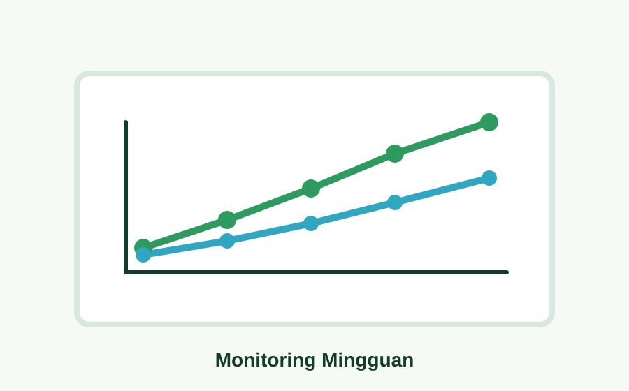

Pertanian
Padi Sawah Terapung
Demplot padi dengan media apung sebagai contoh pemanfaatan area genangan air.
Profil dan Potensi Desa
Pusat informasi profil desa, UMKM, produk unggulan, dokumentasi KKN, peta potensi pertanian, dan monitoring demplot sawah terapung.
Menu Utama
Website ini menampilkan profil desa, UMKM, produk unggulan, dokumentasi KKN, peta potensi pertanian, dan monitoring demplot.

Identitas desa, kepala desa, wilayah, dan ringkasan informasi utama.

Promosi usaha warga, pemilik, lokasi, kategori, dan deskripsi singkat produk.

Daftar potensi produk pertanian, perikanan, pupuk organik, dan olahan lokal.

Tabel dan grafik sederhana untuk perkembangan sawah terapung dan belut.
Fokus Program
Konten bisa diganti dengan data asli desa: foto UMKM, produk unggulan, lokasi potensi pertanian, serta dokumentasi kegiatan KKN.
Lihat DokumentasiMasukkan profil desa dan identitas program KKN.
Lengkapi data UMKM, produk unggulan, dan potensi pertanian.
Update monitoring demplot sawah terapung setiap minggu.
Sorotan Potensi
Tampilkan potensi paling penting dari Waru Barat, mulai dari pertanian, perikanan, pupuk organik, sampai produk UMKM warga.
Pertanian
Demplot padi dengan media apung sebagai contoh pemanfaatan area genangan air.

Perikanan
Budidaya belut terintegrasi dengan genangan air pada area sawah terapung.

Pertanian Organik
Pemanfaatan rumput sekitar desa sebagai bahan pupuk organik sederhana.